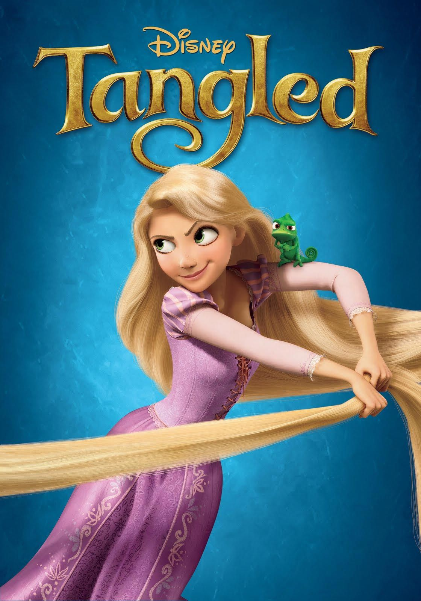

December 14, 2018
Animation, Action, Advanture
PG
Peter Ramsey, Bob Persichetti, Rodney Rothman
Shameik Moore (Miles Morales), Jake Johnson (Peter B. Parker), Hailee Steinfeld (Gwen Stacy), Mahershala Ali (Uncle Aaron), Nicolas Cage (Spider-Man Noir), etc.
IMDB: 8.4/10
Rotten Tomatoes: 97%
Metacritic: 87%
Mile Morales was a regular teenage boy from Brooklyn until he was bitten by a radioactive spider, which gave him the same abilities and powers as Spider-Man. With his newly discovered powers he has to become the new Spider-Man in his dimension after the previous Spider-Man died. He soon discovers there are other Spider-Man from other dimensions, and he has to help them get back to their dimension, while trying to figure out his own new powers. Ultimately, Spider-verse is an awesome movie, every sense looks amazing, and you can see all the hard work that was put into this movie.
I love Spider-verse because every frame of the movie is drawn in and you can pause the movie at any time to see the art/frame of the scene. Also this movie has an amazing soundtrack, that I have listened to over and over again and haven't gotten over it. In addition, Spider-verse, the movie is made to look and feel like a comic book, and it does exactly that.